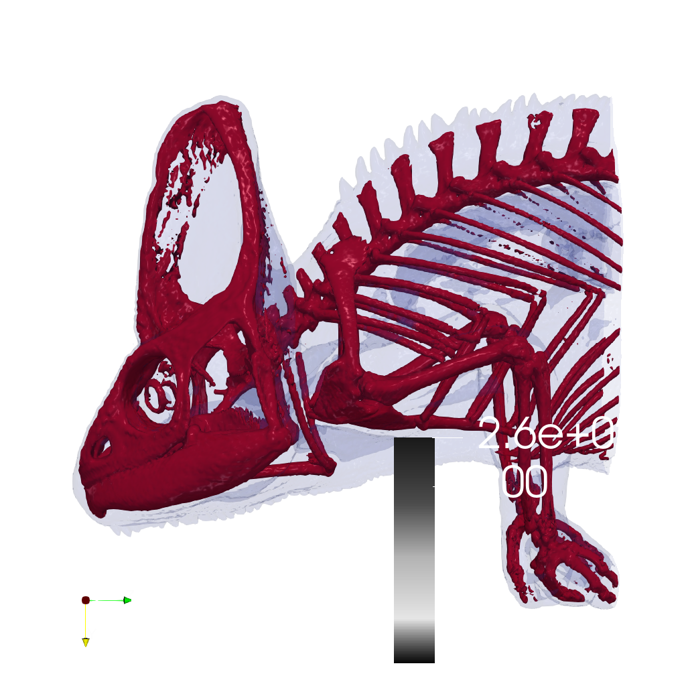

📝 chameleon_isosurface
⚠️ LOW SCORE14/45 (31.1%)
📋 Task Description
Task:
Load the chameleon dataset from "chameleon_isosurface/data/chameleon_isosurface_256x256x256_float32.vtk".
Generate a visualization image of 2 isosurfaces of the Chameleon scalar field dataset with the following visualization settings:
1) Create isosurfaces of Iso_1 with a value of 0.12 and Iso_2 with a value of 0.45
2) Assign RGB color of [0.0, 1.0, 0.0] to Iso_1, and color of [1.0, 1.0, 1.0] to Iso_2
3) Assign opacity of 0.1 to Iso_1, and opacity of 0.99 to Iso_2
4) Set the lighting parameter as: 0.1 to Ambient; 0.7 to Diffuse; 0.6 to Specular
5) Set the viewpoint parameters as: [600, 0, 0] to position; [0, 0, 0] to focal point; [0, -1, 0] to camera up direction
6) White background
7) Visualization image resolution is 1024x1024
8) Save the visualization image as a png file "chameleon_isosurface/results/{agent_mode}/chameleon_isosurface.png"
9) (Option 1) Save the paraview state as "chameleon_isosurface/results/{agent_mode}/chameleon_isosurface.pvsm" if you are using ParaView as the visualization tool
10) (Option 2) Save the cxx code script as "chameleon_isosurface/results/{agent_mode}/chameleon_isosurface.cxx" if you are using VTK as the visualization tool
You should only choose one of Option 1 or Option 2 to save your work. Do not save any other files, and always save the visualization image.
🖼️ Visualization Comparison
Ground Truth

Agent Result
Image not available📏 Vision Evaluation Rubrics
📊 Detailed Metrics
Visualization Quality
4/30
Output Generation
5/5
Efficiency
5/10
Completed in 75.31 seconds (very slow)
PSNR
11.94 dB
SSIM
0.7096
LPIPS
0.3295
Input Tokens
15,670
Output Tokens
396
Total Tokens
16,066